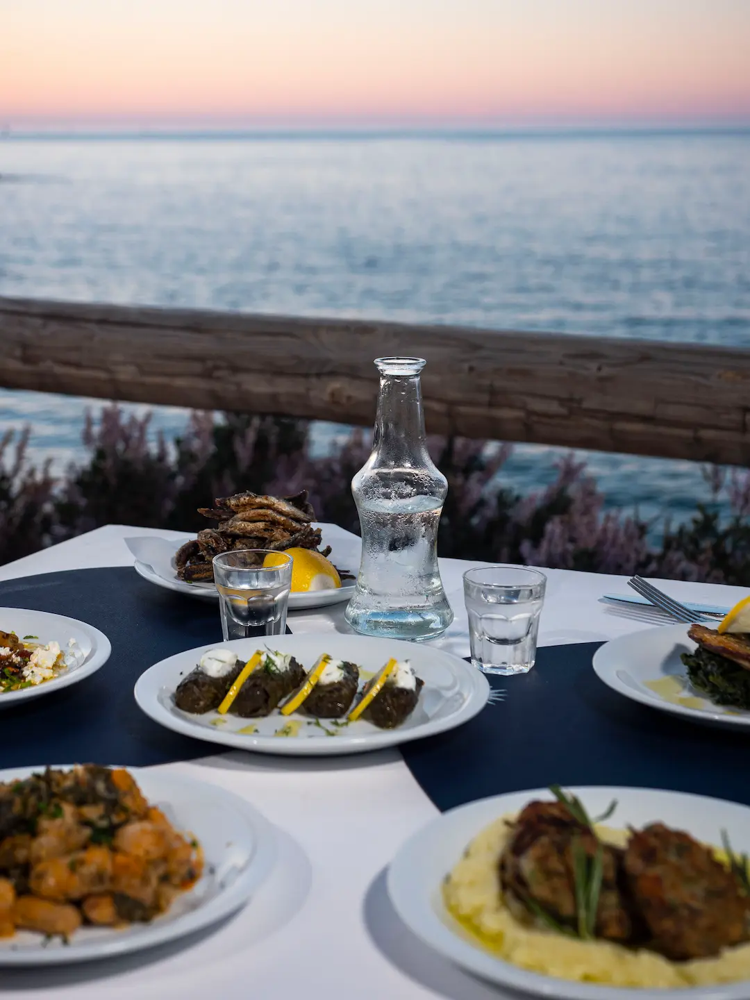

Our story
Come as you are. Stay a little longer.
Orion is a seaside ouzeri shaped around one of the simplest pleasures in Greece — gathering around a table. Cretan ingredients, Mediterranean flavours and the sea just a few steps away.
The food arrives in the middle, the glasses are filled, and everyone helps themselves. Plates are passed from hand to hand, conversation moves easily, and nobody looks at the time.

Gallery


The Orion table
One bottle.
Six plates.
Choose a bottle of ouzo, wine or raki and we will bring six meze plates prepared by the kitchen that day.
The selection follows the season, the market and whatever feels right at the time. No fixed order, no long list to work through — and when the bottle is finished, you can begin again.

Meze at Orion
Small plates,
plenty to say.
Our menu draws from Crete, the Greek islands and the wider Mediterranean — honest flavours, thoughtful cooking and ingredients that do not need much interference. Good olive oil, warm bread, vegetables in season, seafood, cheeses and herbs.
The carafes arrive properly chilled and the glasses stay full. Reach across, take the last piece, order another plate — that is how Orion is meant to be enjoyed.

As the sun goes down
The evening begins when the light changes.
Late afternoon slowly gives way to evening. The terrace fills, the sea darkens, and the lights of Hersonissos begin to appear along the coast.
Plates keep arriving, drinks are poured again, and conversations stretch beyond what anyone had planned. No programme to follow and nowhere else you need to be.

Visit Orion
Find your place by the sea
Orion sits on the waterfront of Hersonissos, on the northern coast of Crete and about 25 kilometres from Heraklion. Join us while the terrace is still bright, or come later, when the temperature drops and the evening settles into its own rhythm. No occasion required — a table by the sea is reason enough.
- Address
- Kallergi 8
Hersonissos, Crete 700 14 - Open daily
- 3:00 PM – 11:00 PM
- Telephone
- +30 2897 025030
- info@orionouzeri.gr
Reservations by phone. Walk-ins are always welcome — there is usually a table by the water.